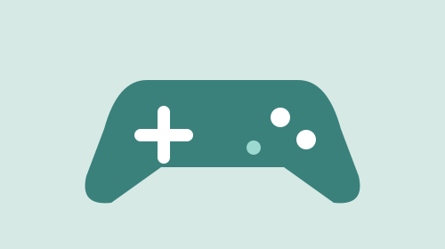
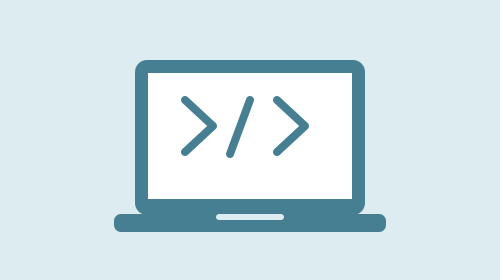

Filmes e Séries
Gosto de assistir filmes para relaxar e me divertir e sair da realidade um pouco.
As séries são legais porque podemos acompanhar várias histórias e até se emocionar por personagens.
Ouço músicas no dia a dia, principalmente nos momentos livres. Os podcasts são uma boa forma de aprender e ouvir conversas.  Os games são uma das minhas formas preferidas de diversão ja que meu sonho era ser jogador profissional!.  A tecnologia faz parte da nossa rotina e está sempre evoluindo e eu gosto de acompanhar esta evolução.Música e Podcasts
Games e Tecnologia